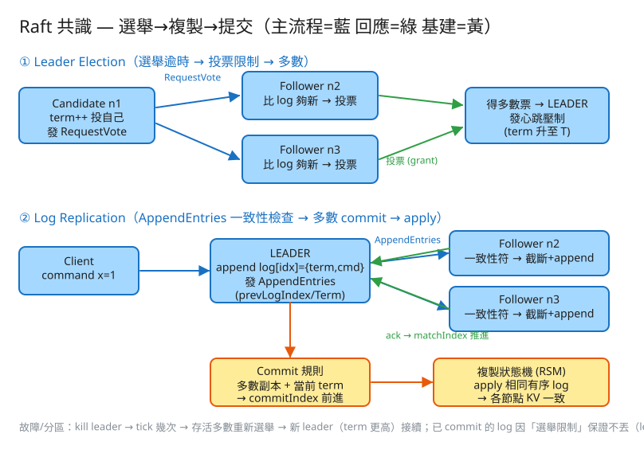

K 分散式系統 看故事就懂 輕鬆讀 30 分鐘
想像一個分組作業：你跟其他幾個同學要一起維護同一份待辦清單。問題是大家不在同一間房，靠傳訊息溝通， 而且訊息可能遲到、漏掉，有人還可能突然斷線（電腦當機）。
這時最怕的就是：每個人手上的清單長得不一樣、順序還不同——到底要聽誰的？Raft 就是在解這件事： 讓一群可能會掛掉、可能網路斷掉的機器，對「同一份清單的內容與順序」達成一致。
很多人第一個疑問是：「不就是大家照抄一份清單嗎？有什麼難的？」難在一個你一定遇過的生活情境——
單獨一台機器最好懂，但一台會掛，掛了服務就停。為了不怕掛，我們把資料複製到好幾台。 可是一旦複製，就會遇到上面那個「大家手上的清單對不起來」的問題。
Raft 的聰明之處，是不讓大家七嘴八舌，而是先選一個組長（leader）： 之後所有指令都只交給組長，組長負責抄給每個人。一個人說了算，順序自然就一致了。
💭 停一下：如果不選組長，讓「誰先收到指令誰就先寫」，會出什麼問題？
別被「共識演算法」這個名字嚇到。整件事其實就是闖 4 關，一關一關來：
一群人要做事，先選一個組長，之後大家只聽他的，就不會七嘴八舌。沒組長的時候怎麼選？
⚠️ 小細節：如果大家同時舉手，票會被分散誰都沒過半（叫「分票」）。 Raft 讓每個人「等多久才舉手」是隨機的，錯開時間，通常一兩輪就選出來了。
有組長之後，所有新指令都交給組長。組長把每條指令抄一份給每個組員。
關鍵規則：一條指令只有在超過半數的人都抄好了，才算「定案（commit）」、可以真的去執行（例如真的把 x 改成 1）。 沒過半數之前不算數——這樣就算組長突然掉線，也不會發生「以為定了結果反悔」的窘境。
選舉時還有一條保命規則：清單比別人舊（落後）的人，不可以當選組長。
這條規則保證：新組長手上一定有「所有已經定案的指令」，所以定案過的東西永遠不會搞丟。
把前三關串起來，看一次完整的「組長掛掉 → 自動換人」：
整套 Raft 反覆出現「過半數」。為什麼是過半數，不是「全部」也不是「隨便幾個」？這背後有個超漂亮的數學直覺：
這個「共同的人」就是關鍵：他記得上一次的定案。所以當組長換人、開新一屆時， 新組長要過半數同意，那群人裡一定有人記得舊定案，於是新組長不可能搞丟它，也不可能出現「兩個組長各做各的」（這叫腦裂 split-brain）。
順帶解釋一個常見疑問：為什麼用奇數台（3、5）最划算？
| 幾台 | 過半數要幾票 | 能容忍幾台掛掉 |
|---|---|---|
| 3 台 | 2 | 1 台 |
| 4 台 | 3 | 1 台（跟 3 台一樣！） |
| 5 台 | 3 | 2 台 |
看出來了嗎？4 台跟 3 台一樣只能容忍 1 台掛，多買一台卻沒多賺容錯——所以用奇數台最划算。
💭 停一下：3 台機器，如果有 2 台同時掛了，叢集還能繼續服務嗎？
工程上的「取捨」聽起來很抽象。換個方式記：Raft 最怕三件事，每條規則都是為了避開某個「怕」。

✏️ 用 Excalidraw 開啟編輯（diagram.excalidraw）白話導讀：
看完上面，這些詞你其實都已經懂了，這裡只是把「工程術語 ↔ 白話」對起來，Part 2 會用到：
| 工程術語 | 白話解釋 |
|---|---|
| 共識（consensus） | 一群機器對「同一份清單的內容與順序」講好、達成一致 |
| leader / follower / candidate | 組長 / 組員 / 想當組長的候選人 |
| term（任期） | 「第幾屆組長」的編號，只會越來越大；看到更大的就承認新組長 |
| log（日誌） | 那份「有編號、有順序的待辦清單」 |
| log replication | 組長把清單抄給每個組員 |
| commit（定案） | 過半數的人都抄好了，這條才算數、可以真的去執行 |
| commitIndex | 清單「已經定案到第幾格」的標記 |
| 過半數（majority / quorum） | 超過一半的人；兩個過半數一定有共同的人 → 不會搞丟舊決定 |
| 心跳（heartbeat） | 組長定時發的「我還在」訊息，壓住別人別亂選 |
| 選舉逾時 | 等多久沒收到心跳就舉手選舉（每人隨機，避免一起舉手） |
| 腦裂（split-brain） | 同時冒出兩個組長各做各的——Raft 嚴禁的災難 |
| RPC | 一台機器「打電話」叫另一台做事的標準格式 |
| 快照（snapshot） | 清單太長時，把目前狀態拍張照存起來，丟掉前面的舊紀錄 |
| CP 系統 | 寧可暫時不服務，也要保證大家資料一致（強一致） |
先看使用者怎麼用它（很簡單）：
# 使用者只跟「組長」互動（找錯人會被導去組長）
提交指令 propose { command: "x=1" } → 等這條被「定案」才回成功
讀資料 read key=x → 想要最新值就走組長為什麼讀也要走組長？因為只有組長最確定「現在的定案到哪」。組員手上的清單可能還差幾格沒抄到，讀它可能讀到舊值。
再看內部那兩通關鍵電話：
# 電話一：拉票（候選人 → 大家）「投我好嗎？」
RequestVote {
我的屆數 term, 我是誰 candidateId,
我的清單到第幾格、最後一格是第幾屆 ← 給對方檢查「我的清單夠不夠新」
} → { 對方屆數, 投不投你 voteGranted }
# 電話二：抄清單 + 心跳（組長 → 組員）
AppendEntries {
我的屆數 term, 我是組長 leaderId,
你前一格應該是第幾格、第幾屆 ← 對齊檢查：對不上就拒絕
要你抄的新指令 entries[] ← 清單為空時，這通電話就只是「心跳」
我已經定案到第幾格 leaderCommit ← 讓組員跟著把定案推進
} → { 對方屆數, 抄成功了嗎 success } ← 失敗 → 組長往前退一格重抄，直到對齊注意「電話二」清單為空時就是心跳——同一通電話兼任「報平安」和「抄清單」，很省。
目前屆數 currentTerm：我見過最大的屆數（避免被舊組長騙）。這屆投票給誰 votedFor：每屆只能投一票，記住投了誰，免得重複投。清單 log[]：那份「有編號、有順序」的待辦清單，每格記著 {第幾屆寫的, 指令內容}。為什麼這三樣一定要寫硬碟？因為機器重開後，如果忘了「這屆投過票了」就可能投第二次 → 選出兩個組長（腦裂）。所以這是保命資料。
定案到第幾格 commitIndex：已知「過半數抄好」的最高格，這格以前都能安心執行。執行到第幾格 lastApplied：真的拿去做了的最高格（永遠 ≤ commitIndex）。下一格要抄給某組員第幾格 nextIndex：對每個組員各記一份，先樂觀地猜，抄失敗就往前退。某組員已對齊到第幾格 matchIndex：用來數「這格到底有沒有過半數抄好」。| 會卡住的地方 | 為什麼 | 怎麼解 |
|---|---|---|
| 所有寫入都擠在組長一個人身上 | 組長要逐條抄 + 等過半數確認 | 把資料切成好幾份，每份一個獨立的小組（multi-Raft）分頭跑 |
| 連「讀」都跑去煩組長很貴 | 每次讀都確認自己還是組長要花一輪 | 給組長一段租約時間，租約內直接本地回答（lease read）；能接受舊一點的值就讀組員 |
| 清單越來越長，重開要重抄很久 | 指令一直累積不刪 | 定期拍快照（snapshot）存目前狀態，丟掉前面的舊紀錄；落後太多的組員直接傳快照給它追上 |
| 網路一抖就一直重選組長 | 選舉逾時設太短 | 逾時設合理；先「試探有沒有勝算」（pre-vote）再真正開新屆 |
💭 停一下：為什麼一個 3 台的叢集，被網路切成「2 台一邊、1 台一邊」時，只有 2 台那邊能繼續寫入？
讀十遍不如玩一遍。這題有一個真的可以跑的小程式，讓你親眼看到「選舉 + 抄清單 + 定案」：
# 啟動（在這題的 demo 資料夾裡）
cd demo
php -S localhost:8035 -t public
# 然後瀏覽器打開 http://localhost:8035x=1）→ 看組長把它抄給組員，過半數抄好後定案（commit）。玩過 demo 了，來掀開引擎蓋看看「前面那幾關到底是哪幾段程式做的」。
好消息：整個 Raft 核心就放在一個檔（RaftCluster.php）裡，可以拆成四個小幫手，剛好對應前面講的工作。
不用會 PHP，我把程式翻成白話、變數改中文、只留關鍵那幾行，看註解就懂。
真實 Raft 每台機器背景各有一個計時器在跑；這個 demo 沒有背景行程，改成你按一下 tick、時間就走一格， 每走一格就讓每個組員的「選舉倒數」減一。倒數歸零＝「等太久沒組長訊息」→ 舉手選舉。
function 走一步() {
for (每個還活著的節點) {
if (它是組長) 心跳倒數--; // 組長：該發心跳了沒？
else 選舉倒數--; // 組員：還要多久沒消息就舉手？
}
for (每個組長) if (心跳倒數 <= 0)
發心跳並抄清單給大家; // ← 報平安，順便把清單同步過去
for (每個組員) if (選舉倒數 <= 0)
發起選舉(它); // ← 等太久了 → 舉手喊「選我」
套用已定案的指令到狀態機(); // ← 定案的才真的去執行
}這就是前面說的「組長定時報平安（心跳），組員等不到就舉手」。 每個人初始倒數是隨機錯開的（避免大家同時舉手分票）。真實系統把「按 tick」換成背景隨機計時器，邏輯一模一樣，只是這裡用手動慢動作播放。
舉手的人先把自己升成候選人：屆數＋1、投自己一票，再挨家挨戶問「投我好嗎？」。 重點是別人投票前會檢查你的清單夠不夠新——這就是「清單舊的不能當組長」那條保命規則藏在程式裡的地方。
function 發起選舉(候選人) {
候選人.屆數++; // 開新的一屆
候選人.角色 = 候選人; 投自己一票;
for (每個別的活節點 as 對方) {
if (我的屆數 > 對方.屆數) // 看到更高屆 → 對方先退位、跟上屆數
對方 變回組員、屆數跟上;
if (對方願意投我) 票數++; // ↓ 願不願意投，看下面這段
}
if (票數 >= 過半數) 當選組長並立刻發心跳; // 壓住其他候選人
}
function 對方要不要投我(對方, 我的屆數, 我清單最後一格, 我最後一格的屆數) {
if (我的屆數 < 對方.屆數) return 不投; // 你那屆太舊了
if (對方這屆已投過別人) return 不投; // 每屆只能投一票
清單夠新 = (我最後一格的屆數 > 對方的)
|| (屆數一樣 且 我清單 >= 對方清單長);
if (!清單夠新) return 不投; // ← 關鍵！清單落後就拒投
對方.這屆投給 = 我; return 投;
}中間那兩個「每屆只投一票」＋「要過半數才當選」，就是 Part 1 說的「數學上不可能有兩個組長」。 最後那行「清單不夠新就拒投」則保證新組長手上一定有全部已定案的指令。真實系統把這段「同一個 process 內的函式呼叫」換成真的網路 RPC，判斷邏輯一字不改。
💭 停一下：為什麼候選人一開新屆，就要先「投自己一票」？
當上組長後，就把指令抄給每個組員。但不能硬塞——要先對齊： 「你前一格應該是第幾格、第幾屆寫的？」對得上才往下抄，對不上就往前退一格再問，直到兩人接得上。
// 組長端：對每個組員抄清單（對不上就退一格重試）
function 組長抄清單給組員(組員) {
要抄的起點 = 我記的「該從第幾格抄給他」;
while (true) {
前一格 = 要抄的起點 - 1;
if (組員抄成功(我的屆數, 前一格, 前一格的屆數, 起點之後的所有指令, 我定案到哪)) {
記下「他已對齊到我清單末端」; break; // 成功 → 更新 matchIndex
}
要抄的起點--; // ← 失敗：退一格再試（直到接得上）
}
}
// 組員端：收到組長的「抄清單」要求
function 組員抄成功(組長屆數, 前一格, 前一格屆數, 新指令[], 組長定案到哪) {
if (組長屆數 < 我的屆數) return 失敗; // 是舊組長，不理他
我的屆數 = 組長屆數; 我變回組員; 重設選舉倒數; // ← 收到合法心跳就別舉手了
if (前一格 > 0 且 我第「前一格」的屆數 != 前一格屆數)
return 失敗; // ← 對不上！請組長退一格
把我清單「前一格」之後砍掉，換成組長給的新指令; // 衝突就覆蓋
if (組長定案到哪 > 我的定案) 我的定案 = 跟上(別超過自己清單長);
return 成功;
}這正是前面「組長念出第 5 條、大家抄到第 5 格；前幾格要一模一樣，不一樣就擦掉重抄」的比喻。 「組員收到合法心跳就重設選舉倒數」這行，就是組長靠心跳壓住大家別亂選的機制。清單為空時這通電話就只是心跳。
這是全題的心臟。組長怎麼知道一條指令可以「定案」了？答案：數一數有幾個人抄好了，過半數就定案。 定案之後，每台機器才把它真的拿去執行（套到狀態機，例如真的把 x 設成 1）。
// 組長：找出「過半數都抄好」的最高那格，把定案線往前推
function 推進定案線(組長) {
for (格 = 清單末端; 格 > 目前定案線; 格--) {
if (這格不是「我這屆」寫的) continue; // ← 安全規則：只用當前屆的指令來定案
抄好的人數 = 1; // 組長自己算一份
for (每個組員) if (他已對齊到 >= 這格) 抄好的人數++;
if (抄好的人數 >= 過半數) { 定案線 = 格; break; } // ← 過半數 → 這條定案！
}
}
// 每台機器：把「已定案、但還沒做」的指令一條條真的執行
function 套用已定案() {
while (已執行到 < 定案線) {
已執行到++;
套到狀態機(清單[已執行到].指令); // 例：x=1 → KV 裡 x 真的變成 1
}
}所有機器照同一個順序、套用同一份定案清單，最後狀態自然一模一樣——這就是「複製狀態機」。 那行「只用我這屆寫的指令來定案」是 Raft 最細也最重要的安全規則：避免拿舊屆的指令去定案，造成已定案的東西被後來覆蓋。
| 關卡（前面講的） | 對應函式 | 關鍵那段 |
|---|---|---|
| ① 沒組長就選一個 | tick → startElection | 選舉倒數歸零 → 舉手 |
| ② 清單舊的不能當組長 | handleRequestVote | 「清單夠不夠新」那個 if |
| ③ 組長抄清單給大家 | AppendEntries | 對齊檢查 + 退一格重抄 |
| ④ 過半數才定案、定案才執行 | advanceCommit + apply | 數人頭 ≥ 過半數 → 推定案線 |
👉 重點：真實系統會把「同一個 process 內的函式呼叫」換成真正的網路 RPC、把「手動按 tick」換成背景隨機計時器、清單太長還會用快照砍掉舊紀錄。 但選舉、清單複製、過半數定案、term 與選舉限制這些核心邏輯一字都不用改——這個 demo 只是把它們用慢動作 tick 模擬給你看清楚。讀懂這個小檔，你就讀懂了 Raft 的核心。
先不要看答案，自己用講給朋友聽的方式回答看看（講得出來才是真的懂）：
Raft = 用「選組長」讓一群會掛掉的機器，對同一份清單的內容與順序達成一致。
4 個關卡：① 沒組長就選一個（過半數票、隨機逾時避免分票）→ ② 組長把指令抄給大家、過半數才定案 → ③ 清單舊的不能當組長（不丟已定案資料）→ ④ 組長掛了自動重選。
3 個怕：怕兩個組長（每屆一票+過半數堵死腦裂）、怕丟掉已定案（清單舊的不能當組長）、怕反悔（過半數才算數）。
工程細節一句話：靠兩通電話（拉票 RequestVote、抄清單/心跳 AppendEntries）→ 屆數和投票要寫硬碟防腦裂 → 它是強一致的 CP 系統（分區時少數派不服務），不是拿來扛海量流量，要省就分片、快照、lease read。
想看更精簡、面試速查用的版本？👉 前往完整版（同樣內容的工程速查格式）。